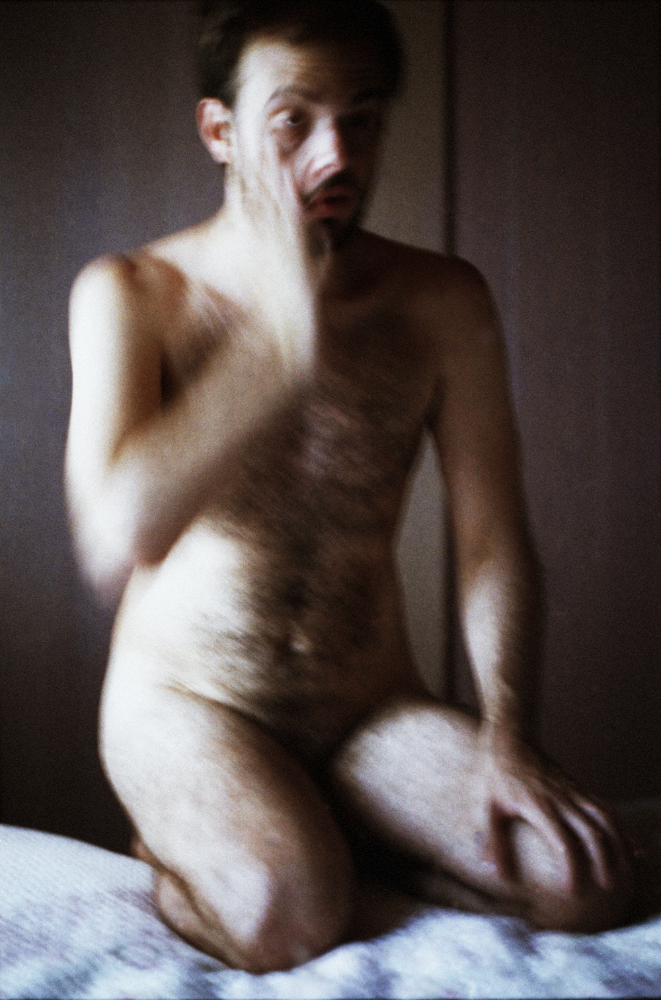
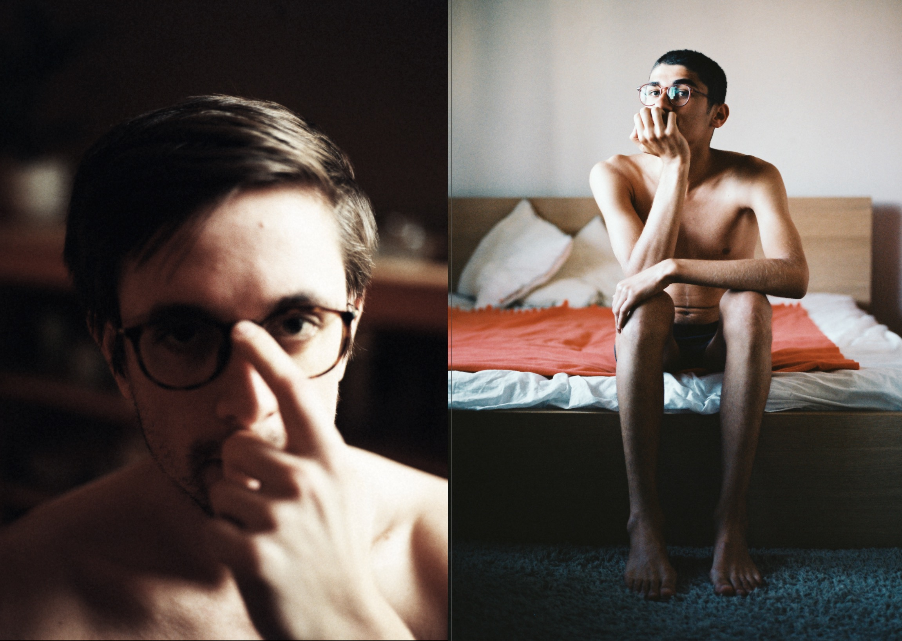
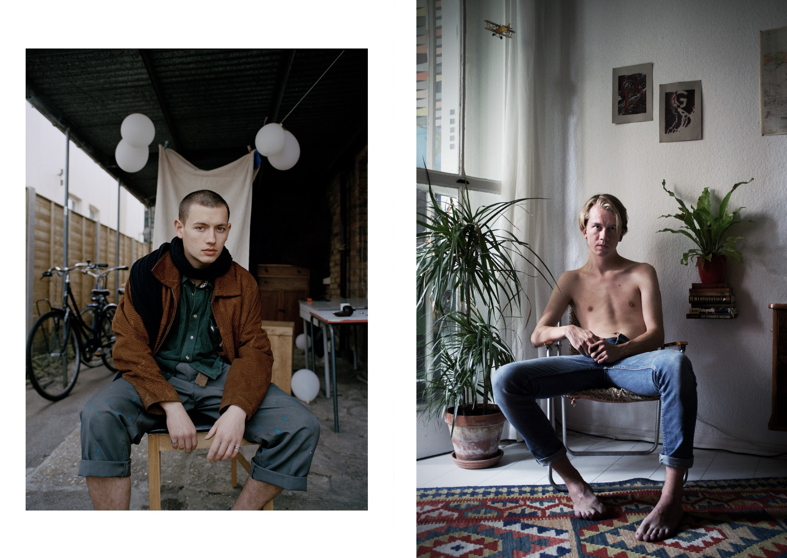

<div class="background-fullscreen">
  <nav style="display: flex; justify-content: space-between;">
    <a style="margin-left: 26px;" href="/">DAREOS KHALILI</a>
    <ul style="margin-right: 26px;" class="nav-inline">
      <li><a href="/about.html">About</a></li>
      <li><a href="/works.html">Works</a></li>
      <!-- <li><a href="www.dareoskhalili.com/store.html">STORE</a></li> -->
      <!-- <li><a href="www.dareoskhalili.com/blog.html">BLOG</a></li> -->
    </ul>
  </nav>

  <div class="reel deformations-reel">
    <div class="works-navigation">
      <h1 style="padding-left: 36px;">to Cover the Silence</h1>
      <p class="works-description"></p>
      <a href="/works.html" class="works-link">Deformations</a>
      <a href="/works-2.html" class="works-link">We Dance Alone</a>
      <a href="/works-3.html" class="works-link works-link-active">to Cover the Silence</a>
    </div>
    
    
    
    
    
    
    
    
    
    
    
    
    
    
    
    
    
    <!-- <div class="poem">
      <h2>Chain Smokers</h2>
      <p>His skin was Glacier White. <br>
      Only that yellow bit between his fingers,<br>
      reminded me he’s human.</p>
    </div> -->
  </div>


</div>

<style type="text/css">
  .poem {
    width: 200px;
  }
  .works-link {
    text-decoration: none;
    color: red;
    font-size: 0.9rem;
    width: 140px;
    justify-content: center;
    display: flex;
  }

  .works-link-active {
    background-color: red;
    color: white;
    background-color: red;
  }

  .works-navigation {
    display: flex;
    flex-direction: column;
  }

  .works-link {
    margin-left: 36px;
  }

  .reel {
    /* ↓ Custom properties for ease of adjustment */
    --space: 1rem;
    --color-light: #fff;
    --color-dark: #000;
    --reel-height: 95vh;
    --item-width: 25ch;
    display: flex;
    height: var(--reel-height);
    /* ↓ Overflow */
    overflow-x: auto;
    overflow-y: hidden;
    /* ↓ For Firefox */
    scrollbar-color: var(--color-light) var(--color-dark);
  }

  .reel > * {
    /*
    ↓ Just a `width` wouldn’t work because
    `flex-shrink: 1` (default) still applies
    */
    flex: 0 0 var(--item-width);
  }

  .reel > img {
    /* ↓ Reset for images */
    height: 97%;
    flex-basis: auto;
    width: auto;
  }
  .reel > * + * {
    margin-left: var(--space);
    margin-top: var(--space);
    margin-bottom: var(--space);
  }
  .reel.overflowing {
    /* ↓ Only apply if there is a scrollbar (see the JavaScript) */
    padding-bottom: var(--space);
  }

  /* ↓ Hide scrollbar with `no-bar` class */
  .reel.no-bar {
    scrollbar-width: none;
  }
  .reel.no-bar::-webkit-scrollbar {
    display: none;
  }

  /*MOBILE PORTRAIT*/
  @media screen and (max-width: 600px) and (orientation:portrait) {
    .works-navigation {
      align-items:  center;
      justify-content:  center;
      /*width: 200px;*/
    }

    .reel{
      flex-direction: column;
      overflow-x: hidden;
      overflow-y: auto;
    }

    .reel > * + * {
      margin-left: 0;
      margin-top: 0;
      margin-bottom: var(--space);
    }

    .reel > img {
      height: auto;
      width:  100%;
      margin-left: 0;
    }

  }

  /*MOBILE LANDSCAPE*/
  @media screen and (min-device-width: 481px) and (orientation:landscape) {
    .reel > * + * {
      margin-left: var(--space);
      margin-top: 0;
      margin-bottom: var(--space);
    }

    .works-navigation > h1 {
      font-size: 18px;
    }
  }
</style>
